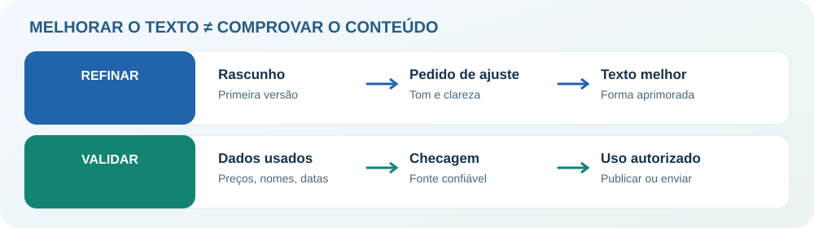

Melhorar respostas por rodadas e conferir antes de usar.
Entenda o exemplo
A primeira resposta é ponto de partida. Refinar ajusta; validar confere.
Revisar um rascunho: reler, ajustar e só então enviar.
A primeira resposta não é a última
Um cliente avisa: “Meu pedido chegou errado”. A primeira resposta do Gemini pode ser educada, mas genérica ou prometer solução sem conferência.
O que observar: Depois de gerar, leia e identifique o que ainda precisa ser ajustado.
A analogia da roupa sob medida
Uma roupa pode precisar de ajustes até servir bem. Com textos, é parecido: peça para encurtar, adequar o tom e retirar promessas indevidas.
O que observar: Ajustar o texto melhora a adequação; conferir os fatos é outro trabalho.
Faça duas rodadas no Gemini
Primeiro peça uma resposta cordial. Depois exija que ela não prometa reembolso ou data antes da análise do pedido.
O que observar: Compare as versões: qual protege melhor o cliente e a empresa?
O que mudou?
Um bom ajuste remove frases como “resolveremos hoje” se ninguém confirmou o prazo. Também evita pedir dados pessoais desnecessários.
O que observar: Se surgir uma promessa não confirmada, refine outra vez antes de usar.
Pratique com uma loja
Uma pessoa reclama de atraso numa loja de roupas. Crie a resposta e faça uma segunda rodada para torná-la mais curta e precisa.
O que observar: Você mudou só o estilo ou também verificou as informações?

PRÁTICA
Experimente no Gemini
Faça o teste A/B (vago × C.O.I.R.F.), pontue de 0 a 2 em 5 critérios e refine o B.
Atenda uma reclamação fictícia da Café Horizonte: “Meu pedido chegou errado”. Crie uma resposta curta, respeitosa e clara. Não prometa estorno, troca ou prazo sem confirmação. Diga que a equipe verificará o caso e solicite somente as informações necessárias para localizar o pedido.
Reescreva mais curto, tom mais caloroso, sem prometer prazo. Mantenha o nome do produto.